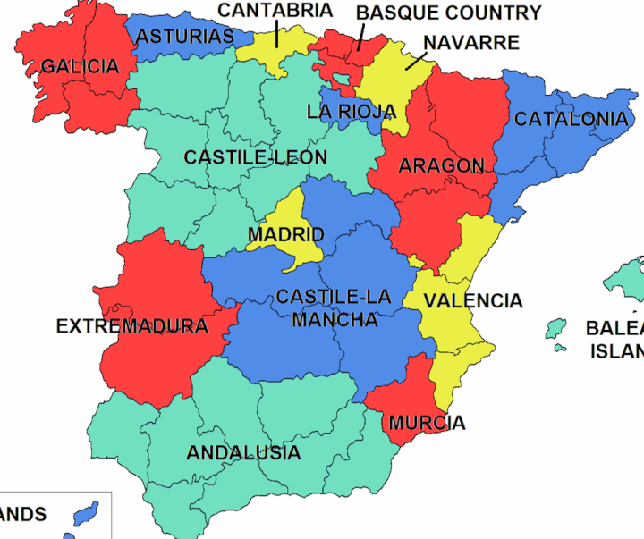
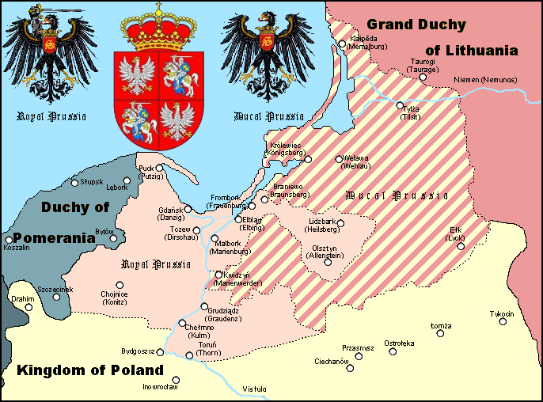

Nizozemskou východní Indii?
- dnešní Indonesie
- byl to název kolonie zřízené nizozemskou Východoindickou společností na území dnešní Indonésie, která se během 19. století stala nizozemskou královskou kolonií.
- hl. Město Batavia (Jakarta)
Německá jihozápadní afrika:
- Numibie
- byla německou kolonií v letech 1884 až 1915, kdy byla obsazena Jihoafrickou unií. Poté ji jako Jihozápadní Afriku spravovala do roku 1990, kdy se osamostatnila pod názvem Namibie.
>Nizozemské Antily
jižní části Karibiku u venezuelského pobřeží
byla jedna ze zemí Nizozemského království. Skládaly se ze 6 ostrovů Malých Antil
- Do roku 1867
- Koupena za 7 mil.
- Mikuláš Klaudyán
- († 1521 Lipsko) byl český učenec, lékař, kartograf a tiskař, autor první tištěné mapy Čech. Klaudián byl člen jednoty bratrské.[1] Svoji tiskárnu založil v Mladé Boleslavi a při své práci udržoval styky s norimberskými dílnami.
- Hispánie
Karélie- Nachází se v severní Evropě a v současné době je rozdělena mezi Rusko (Leningradská oblast a Republika Karélie) a Finsko (provincie Jižní Karélie a Severní Karélie).
Ingermanland- Oblast okolo Leningradu
Žmuď - nebo Dolní Litva je jedním z pěti etnografických regionů Litvy. Rozkládá se na severozápadě země mezi řekou Němen, Lotyšskem, Baltským mořem a tzv. Malou Litvou.
Livonsko - je historické území v Pobaltí, které původně zahrnovalo celé území dnešního Estonska a Lotyšska a od konce 16. století bylo redukováno na část dnešního Lotyšska na pravém břehu Dviny a jižní (větší) část dnešního Estonska.
Kuronsko
Prusy královské- bylo mezi lety 1466–1569 území patřící Polskému království, resp. polskému králi, které bylo po vítězství ve válce s Řádem německých rytířů odtrženo od jejich řádového státu.
Prusy knížecí- bylo vévodství, které existovalo ve východním Prusku mezi lety 1525–1701, přičemž od roku 1618 až do roku 1701 bylo v personální a později reálné unii s Braniborskem, kterýžto útvar nesl označení Braniborsko-Prusko.
tři duchovní:
- arcibiskup mohučský
- arcibiskup kolínský
- arcibiskup trevírský
čtyři světští:
- král český
- falckrabě rýnský
- vévoda saský
- markrabě braniborský
- Eva Semltánová
- Josef Žemlička
- František Roubík
- Rudolf Krajíc
- Josef Poulík
- Jaroslav Beneš